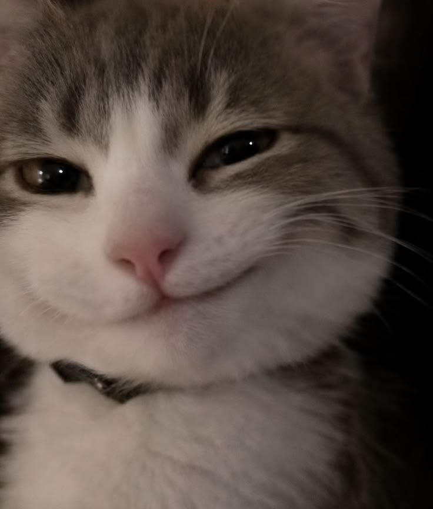
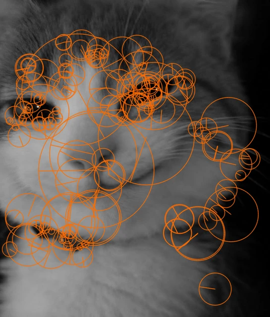
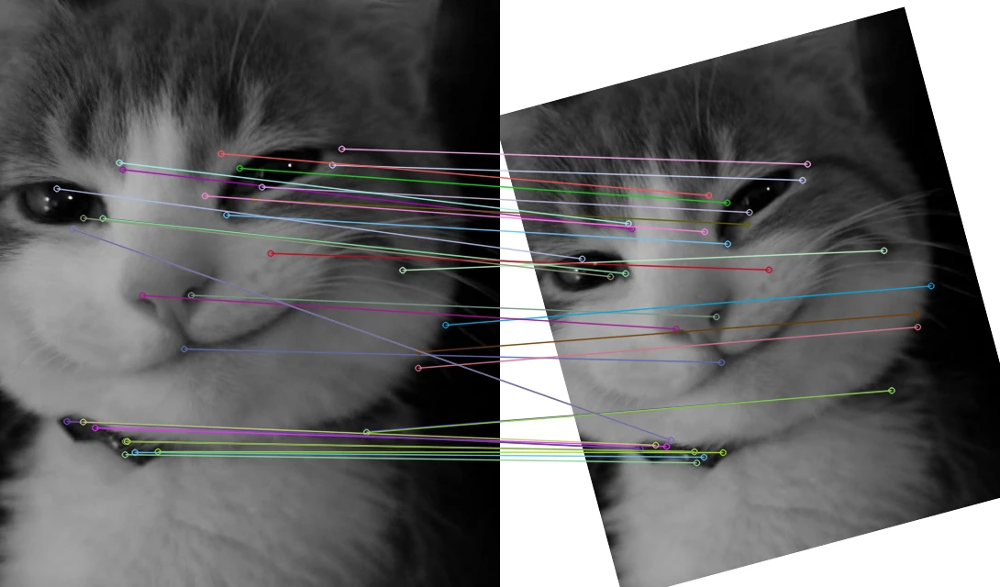
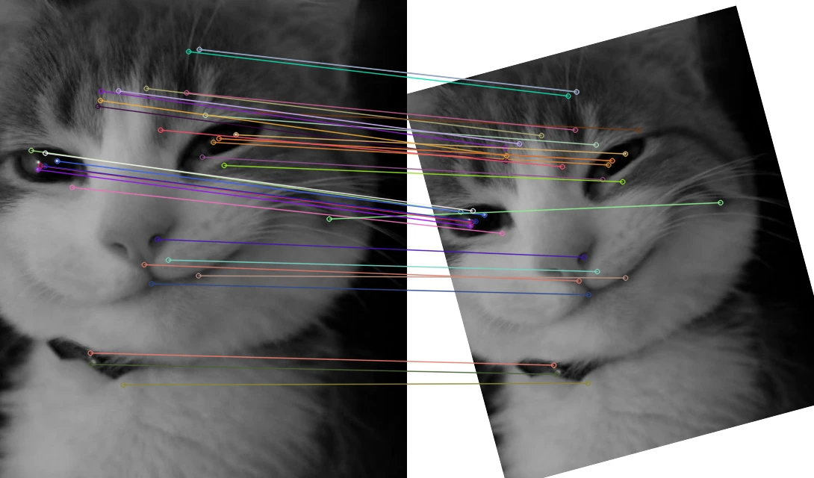
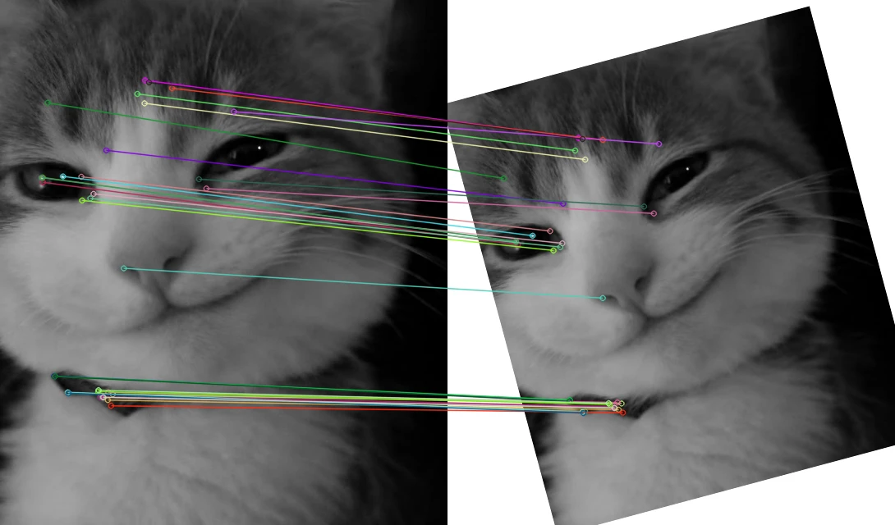
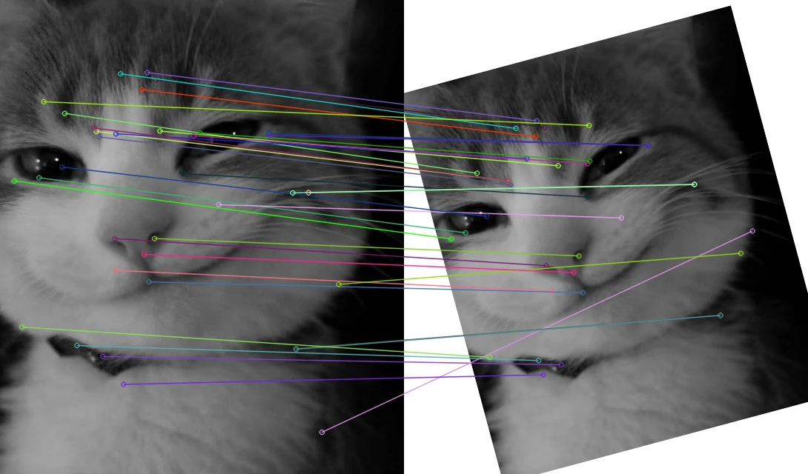

Where to look
Each keypoint has a position, scale, and orientation. Strong responses identify distinctive local structure.
det(H) ≈ Dxx Dyy − (0.9 Dxy)²Find distinctive points. Describe their neighborhoods. Connect the same features across images, even as scale and orientation change.


SURF, or Speeded-Up Robust Features, detects distinctive blob-like regions and describes the image around each keypoint. Those local descriptions let us look for corresponding features in a second image.
Integral images make box-filter responses efficient. A Hessian-based detector finds candidate regions; Haar-wavelet responses describe their appearance and, in standard SURF, estimate their orientation.
Each keypoint has a position, scale, and orientation. Strong responses identify distinctive local structure.
det(H) ≈ Dxx Dyy − (0.9 Dxy)²Sixteen subregions summarize signed and absolute horizontal and vertical Haar responses.
4 × 4 cells × 4 values = 64Compare descriptors, then reject ambiguous nearest neighbors with a distance-ratio test.
nearest < 0.75 × second-nearestStandard SURF estimates orientation. U-SURF omits it for similarly oriented views.
upright=False / upright=TrueFrom the handout’s objective and three laboratory activities.
Understand SURF, extract keypoints and descriptors, and visualize feature scale and orientation.
Match two images with SURF descriptors, then compare SURF, SIFT, and ORB on the same pair.
Test U-SURF when orientation invariance is unnecessary and inspect what changes under rotation.
Tasks 1–3 use genuine, saved OpenCV SURF/SIFT/ORB detections on the included cat. Matching and geometric checks are calculated in your browser from those descriptors. The ORB playground below performs new detection on your uploaded image. Uploads do not change the saved SURF experiments.
Run genuine SURF on your own images with Python ↗Load a grayscale image, inspect genuine SURF keypoints and 64-value descriptors, and match them to a transformed view. This includes Activity Steps 1–3 from the handout.
click a point to inspectEach cell: Σdx, Σdy, Σ|dx|, Σ|dy|. The normalized vector contains 64 floating-point values.
OpenCV retains keypoints whose Hessian response exceeds the threshold. Detection and descriptors were saved independently at 100, 400, 1000, and 2000. These are actual measured counts from the same grayscale cat.
Matching uses L2 distance and two nearest neighbors. A ratio below the chosen threshold accepts the best candidate. A ratio-test match is a candidate correspondence, not automatically a correct match. The known affine transform lets us check whether positions agree within 3 pixels.
Compare genuine detections from one OpenCV build on the same grayscale pair. SURF uses 64 floats, SIFT uses 128 floats, and ORB uses 32 bytes of binary tests.
SURF Hessian 400; SIFT and ORB maximum features 1000. Their thresholds and feature budgets are not equivalent. Reference extraction times use one warmup and five runs per image on one CPU thread; the displayed pair time adds the per-image medians. Browser matching and drawing are excluded. This small sample is not a universal speed benchmark.
SURF approximates Hessian responses with box filters. SIFT finds scale-space extrema and builds gradient histograms. ORB combines FAST corners with oriented BRIEF binary descriptors. Floating-point SURF/SIFT descriptors use L2 distance; ORB uses Hamming distance.
The verified count compares matched positions with the known transform (3-pixel tolerance). It describes this controlled pair only. Repeated textures, interpolation, image borders, thresholds, and feature counts all influence the result. Avoid ranking algorithms by raw keypoint count alone.
Compare standard SURF with U-SURF. The detector is the same; upright mode omits orientation estimation and changes how descriptors are formed.
Run the comparison to inspect the orientation tradeoff.
U-SURF can reduce extraction work when views have similar orientations, such as suitably aligned stereo images or controlled captures. It remains scale-aware but does not provide standard SURF’s rotation invariance. Expect matching to degrade under substantial rotation; exact results depend on the image.
Changing upright should not change detection locations at the same settings. This site verifies that the saved standard and upright keypoint sets agree. The descriptor angles in upright mode are fixed; that is a deliberate algorithm setting.
Upload a cat, a landscape, or colored shapes and run actual OpenCV ORB in your browser. ORB is the handout’s suggested alternative when SURF is unavailable. This module is explicitly ORB, not SURF.
JPEG, PNG, WebP · up to 15 MiB · processed at a maximum of 640 px per side
Images are decoded and resized in this browser. A worker converts the pixels to grayscale, generates a target, and extracts real ORB keypoints and binary descriptors with OpenCV.js 4.12.0. Hamming matching uses a fixed 0.75 ratio test. No upload leaves your device.
The bundled runtime is about 11 MB and loads only on the first run. A warmup and three timed extractions per image give a median pair extraction time; matching is measured separately. These browser timings must not be compared directly to the saved native SURF/SIFT timings. Smooth or blank images may yield no features: that is a valid result.
The Python kit implements real SURF, SIFT, ORB, U-SURF, feature visualization, matching, geometric checks, and the Hessian-threshold experiment. It includes the cat and earlier conversation scripts.
python surf_lab.py --image cat.jpgpython surf_lab.py --angle 45 --no-showSURF setup matters: use a SURF-enabled OpenCV contrib build with OPENCV_ENABLE_NONFREE=ON. Ordinary modern PyPI wheels do not enable SURF. SIFT is available in modern standard OpenCV; the handout’s older SIFT restriction no longer describes those builds.
Loading source…The summary below follows the most recent Task 2 comparison on the saved cat pair. Live uploaded-image measurements stay in the ORB playground.
Loading genuine reference measurements…
These fixed images were generated by OpenCV 3.4.2 with SURF enabled. Cat: 545 × 640 grayscale; Hessian 400; rotation 15°; scale 0.85; translation (+15, +10); ratio 0.75. They remain independent of your controls and uploads.




Inspect keypoint locations, ambiguous matches, the Hessian threshold, and the difference between SURF and upright SURF. Record observed results, not an assumed speed ranking.
All three questions, with concise answers suitable for your handwritten A4 submission.
Download written answers ↗Increasing the threshold retains stronger Hessian responses and generally produces fewer keypoints. Decreasing it includes weaker features and generally produces more, potentially including noise. The handout uses 400. On the included cat, thresholds 100, 400, 1000, and 2000 produced 547, 141, 49, and 21 source keypoints respectively.
SURF descriptors are numerical vectors summarizing local appearance around keypoints. Comparing them identifies corresponding features across images despite scale changes and, with standard SURF, rotation. They support tasks such as object recognition, tracking, and image stitching. Default SURF descriptors contain 64 floating-point values; extended mode uses 128.
SURF detects Hessian-based blob-like features using efficient box filters and integral images. SIFT finds scale-space extrema and uses gradient-histogram descriptors. ORB combines FAST corners and oriented BRIEF binary descriptors. SURF was designed to be faster than SIFT, while ORB is generally fast and compact. Actual speed and matching quality depend on images, parameters, implementation, and hardware; use the measured comparisons rather than assuming a universal ranking.
The genuine cat experiments show fewer SURF keypoints at higher Hessian thresholds. Descriptors make matching possible; geometric checks help distinguish plausible correspondences from incorrect ones.
Standard and upright SURF detect the same locations, but their descriptors respond differently to rotation. SIFT and ORB offer different feature representations and computational costs. A sound comparison keeps inputs consistent and reports its settings and execution environment.
Explore another setting